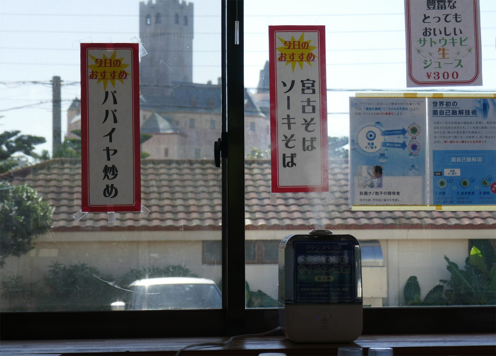
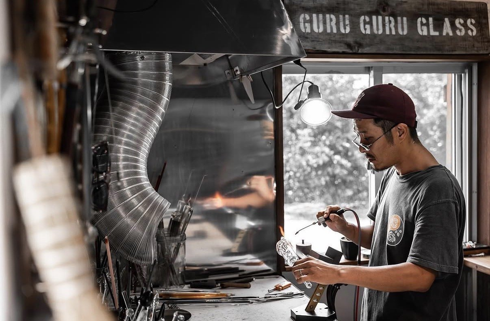

August Creative Portrait
Guru Guru Glass / Makotoグルグルグラス・誠さん
Meet the glass artist shaping Miyakojima's ocean colors into playful handmade pieces.
宮古島の海の色を、遊び心あるガラス作品に込めるガラス作家・誠さんを紹介しています。
Read the portrait特集を読む
MY MIYAKOJIMA新しい島の入口
Proud member Miyakojima Tourism Association 宮古島観光協会 正会員A bilingual guide for finding beautiful places, local people, and small island moments that make Miyakojima feel close. 美しい場所、島で活躍する人、小さな季節の便り。宮古島を近くに感じられるバイリンガルガイドです。
New Guide Tab新しいガイドページ
A new bilingual space for English-friendly tours, local guides, and island experiences selected with care. 英語対応のツアー、ローカルガイド、宮古島らしい体験を丁寧に紹介する新しいページです。
Island Nowいまの宮古島
My Miyakojima is shaped as a calm bilingual guide for travelers, local businesses, and island stories that deserve to be found with care. My Miyakojimaは、旅行者、島の事業者さま、そして丁寧に届けたい島の物語をつなぐ、静かなバイリンガルガイドです。
Meet the glass artist shaping Miyakojima's ocean colors into playful handmade pieces.
宮古島の海の色を、遊び心あるガラス作品に込めるガラス作家・誠さんを紹介しています。
Read the portrait特集を読む Now Open
Now Open
A new private villa glamping stay in Bora, Gusukube.
城辺保良に誕生した、プライベートなヴィラグランピング滞在。
View stay詳しく見る
Local FoodA long-loved family-run restaurant near the Shigira area.
シギラエリア近くで長く愛される家族経営の食堂。
View food feature詳しく見る Miyakojima Cares
Miyakojima Cares
A small doorway into local care, respect, and community support.
旅を楽しみながら、島の暮らしや地域活動にやさしく関わるための入口。
Read more詳しく読むExplore With Intention目的から探す

From The Island Desk島からのお知らせ
For Local Businesses宮古島の事業者さまへ
My Miyakojima creates bilingual feature pages for selected local businesses, with thoughtful writing, clear visitor information, and design that respects each brand. My Miyakojimaでは、宮古島に根ざした事業者さまを英語と日本語で丁寧に紹介します。想い、写真、基本情報を整え、来店や予約につながるページづくりを大切にしています。
MIYAKOJIMA • OKINAWA
Updated August 20262026年8月更新
A curated bilingual guide to Miyakojima.
英語対応のお店やスポットを紹介する 宮古島のバイリンガルガイド。
Officially Registered正式登録済み
My Miyakojima is an officially registered local platform for curated bilingual features and partnerships. My Miyakojimaは、宮古島の魅力を伝える正式登録済みのバイリンガルメディアです。
August Island Edit8月の島だより
4 fresh updates this week 今週の新着情報 4件
Fresh pages, open doors, local stories, and places worth saving for your summer plans.
新しいページ、オープンした場所、島の人の物語。夏の予定にそっと残したい宮古島の情報を更新しています。
 Now Open2026年7月30日オープン
TOPPURI Now OpenTOPPURI オープン
Now Open2026年7月30日オープン
TOPPURI Now OpenTOPPURI オープン
TOPPURI is now open in Bora, Gusukube with private villa glamping, island dining, a private bar, sauna, breakfast, and quiet Miyakojima nights.
TOPPURIが宮古島・城辺保良にオープン。プライベートなヴィラグランピング、島のディナー、プライベートバー、サウナ、朝食、そして静かな宮古島の夜を楽しめる滞在先です。

August Spotlight8月の特集 Guru Guru GlassグルグルグラスMakoto turns Miyakojima's ocean colors, surfing rhythm, and playful imagination into handmade glass pieces.
誠さんがつくる、海の色と島の空気、遊び心を感じる宮古島メイドのガラス作品。
 New Local Food新着ローカルフード
Hirochan Shokudoお食事処 ひろちゃん
New Local Food新着ローカルフード
Hirochan Shokudoお食事処 ひろちゃん
A long-loved family-run shokudo in Ueno near the Shigira area, welcoming island residents and travelers with easy local comfort food.
シギラエリアに近い上野で長く親しまれてきた、地元の方にも旅行者にもやさしい家族経営の食堂を追加しました。
This Week & Coming Up今週とこれからの宮古島
Miyakojima Events Only 宮古島内のイベントのみ Updated August 1 / 8月1日更新
A special 2026 performance at JTA Dome Miyakojima.
JTAドーム宮古島で開催される2026年の特別公演。
Official event details公式イベント情報Traditional sabani racing at Turiba Sunset Beach. Teams gather from 12:00.
トゥリバーサンセットビーチで行われる伝統サバニレース。12:00集合。
Official event details公式イベント情報Event details may change. Please confirm with the organizer before visiting. 開催内容は変更になる場合があります。お出かけ前に主催者の最新情報をご確認ください。

New Food Feature 新着フード特集
New Client Feature新規掲載A beloved Miyakojima steakhouse with American and Japanese roots, English-friendly staff, and a warm island feeling that makes dinner easy for travelers.
アメリカと日本、両方のルーツを持つオーナーが営む宮古島の人気ステーキハウス。英語対応のスタッフもいるため、旅行中の方にも予約しやすい一軒です。
View the feature 詳しく見るThe Island Edit宮古島エディット
A clear first step into island basics, newest stories, selected places, and creative features.
島の基本情報、新しい特集、おすすめスポット、クリエイティブ特集への入口。
Start Hereはじめに
Beaches, bridges, seasons, area notes, and how My Miyakojima curates the island.
ビーチ、橋、季節、エリアガイド、My Miyakojimaの選び方まで。
August Creative Spotlight8月のクリエイティブ特集Meet Makoto, the Yokohama-born glass artist creating playful Miyakojima pieces with color, skill, and heart.
横浜出身のガラス作家・誠さん。色と技術、そして島への想いがこもった宮古島メイドの作品。
Selected PlacesおすすめスポットFood, stays, transport, wellness, and lifestyle picks chosen for the guide.
食事、宿泊、移動、ウェルネス、ライフスタイルまで、いつでも訪れたい場所。
Creative Archive特集アーカイブMonthly creative spotlights gathered in one place.
宮古島にゆかりのある人やストーリーをまとめた月ごとの特集。
NEW WELLNESS FEATURE 新着ウェルネス特集

PRIVATE SALON · HAWAIIAN LOMI LOMI
New Client Feature新規掲載A quiet sea-side relaxation salon in Miyakojima, offering private Hawaiian lomi lomi sessions by therapist Nanami Sato.
宮古島の海を感じる静かな貸切サロンで、セラピスト佐藤七海さんによるハワイアンロミロミを受けられる新しいウェルネス特集です。


AUGUST ISLAND EDIT 8月の島ガイド
CONTRIBUTE TO MIYAKOJIMA 島にやさしく関わる
ENJOY • RESPECT • GIVE BACK
New Guide新しいガイドA gentle guide for visitors who want to enjoy the island while respecting local life, joining community efforts, and caring for Miyakojima's beaches and rhythm.
旅を楽しみながら、島の暮らしや自然を大切にしたい方へ。 ビーチクリーン、地域活動、思いやりのある過ごし方への入口です。
A curated bilingual lifestyle space featuring selected creatives, businesses, and stories rooted in Miyakojima’s culture.
宮古島の文化に根ざした、 厳選されたクリエイターやお店、ストーリーを紹介する バイリンガルのキュレーション型ライフスタイル空間です。
For Miyakojima Businesses事業者さまへ
Reach people already searching for Miyakojima places, services, and experiences.
宮古島のお店や体験を探している旅行者に、自然に届く導線を作ります。
Your story, atmosphere, photos, and details are shaped into a polished feature page.
お店の雰囲気や想い、写真、基本情報を整えて、魅力が伝わるページにします。
Support both international visitors and Japanese readers without losing your brand voice.
海外からの旅行者にも日本語で読む方にも、自然に伝わる紹介を目指します。
For restaurants, salons, stays, shops, rentals, and experiences rooted in Miyakojima.
飲食店、サロン、宿泊施設、ショップ、レンタカー、体験など、宮古島に根ざした事業者さまへ。
Fresh pages and guides now live on My Miyakojima.
My Miyakojimaに新しく追加されたページとガイドです。
New Stays
宿泊施設
Local Shops
ローカルショップ
Food & Local Spots
飲食店・ローカルスポット
Creative Spotlights
クリエイティブ特集
Island Guides
島のガイド